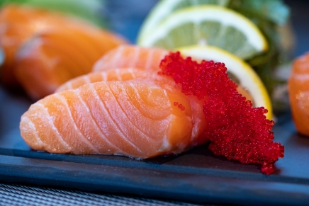
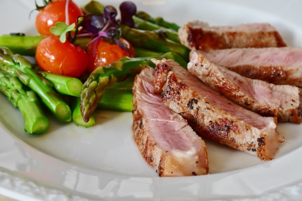
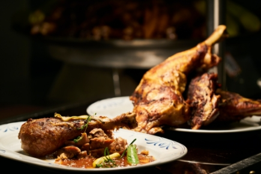
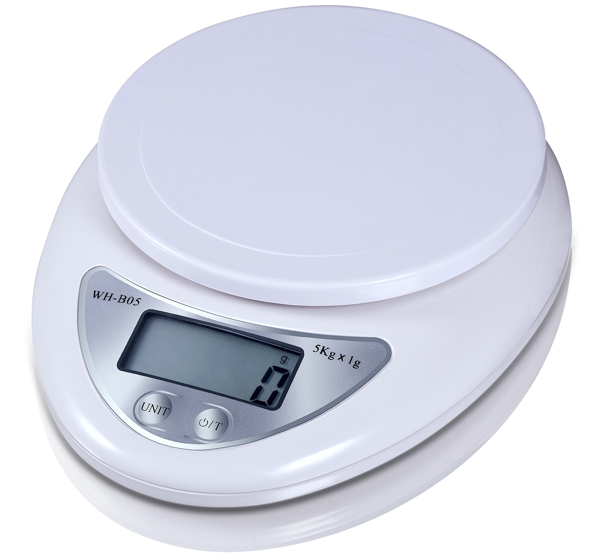

怎麼樣才能算是料理呢? 可以定義為，經過烹飪手法讓食材變成可食用的菜餚。 重點在於可食用性，下面用熟度分為三類
例 : 生魚片、沙拉
熟度: 0%
例 : 牛排
熟度: 50%
例 : 雞腿
熟度: 0%

接下來認識廚具，最基本的菜刀、砧板、平底鍋，有這三樣就可以做飯了。
除此之外還有常見的像是電鍋、微波爐、烤箱，下列是廚具和對應的烹調方法。
讓各位在料理時不會選錯器具，並根據家裡有的廚房用具進行烹飪
使用時機 : 適合平面的食物，量不太多時可以用平底鍋
例 : 荷包蛋、煎餅、炒飯
使用時機 : 食物量多或是大火快炒時使用
例 : 炒菜、炸物
使用時機 : 煮飯、煮湯、碰到水氣也不會被影響的食物
例 : 蒸包子、蒸蛋、燉雞湯
使用時機 : 需要快速加熱食物時、冷凍食材解凍
例 : 微波食品
使用時機 : 用來烤點心，或是料理肉類、蔬菜都很適合
例 : 麵包、蛋糕
食譜選擇
選好食材後，再決定料理方法， 可以上網搜尋:食材名＋關鍵字， 從中選擇一個自己喜歡的食譜。
備料和前置作業
「工欲善其事，必先利其器」， 這個道理放在做飯上也相通， 想把料理做好，備料不可少。
正式料理
「做中學」理論需要實踐，從中獲得經驗。 但是很多細節，都是要實作才會學習到的
我個人會習慣看3個食譜，再決定要用哪一個 選食譜的原則 : 材料相符度高 、步驟少
初學者有時候單看食譜會不夠清楚，所以最好可以看影片 第一遍先看流程，理解整個作法，然後截圖食材 之後有問題，針對不會的地方再回去看影片
以下推薦兩個頻道:
簡單哥
Wecook123 料理123 親古們
歐爸KAI嗑啦系列
選好食譜可以進入備料的階段，照食譜上面的要求做就可以了，以下介紹讓備料更容易的器具
一般來說會有四隻:
1大匙（tbsp）＝15c.c.
1小匙（tsp）＝5c.c.
1/2小匙＝2.5c.c.
1/4小匙＝1.25c.c.
tbsp＝ Tablespoon(湯匙)
tsp＝ teaspoon(茶匙)
一般量杯 : 250ml
米杯 : 180ml
單位 : g 放上容器後要先歸零再測量
最後重頭戲來到正式料理階段，這邊就我的經驗跟大家分享
爲什麼第一次強烈建議按照食譜呢? 因為需要累積正確的經驗 「前人種樹，後人乘涼」，當不熟悉作法， 就擅自改動食譜，最後結果都會很可怕。 食譜不一定是最完美的，但是邏輯和味道是值得借鑑的
不管學習什麼，都要先模仿再創新。 通常是被先味道被驚豔到，才會好奇如何復刻， 有機會的話，先去餐館嚐嚐看，運用五感去品味和分析， 並且思考每個細節的意義，這樣才稱得上是真正的學習。
通常在爆香之後，我們會放比較難煮熟的食物下去先翻炒， 甚至會先煮過再炒，如: 紅蘿蔔、花椰菜、豆子。 就是希望食物出來都是熟的，與前面的可食用性相呼應。
炒菜先用小火把食物煮熟，再用中火收汁和上色， 煮湯先用大火把水煮滾，再轉小將食物煮熟， 所以沒有不能用大火，但是在掌握好火侯之前， 用小火是比較保險的選擇。
沒有學不起來的技能，只有不夠多的練習。 學語言有語感，學音樂有音感，學料理有手感， 但是這些感覺都不是一夜之間就會有的， 是反復不斷的練習，才會擁有的。